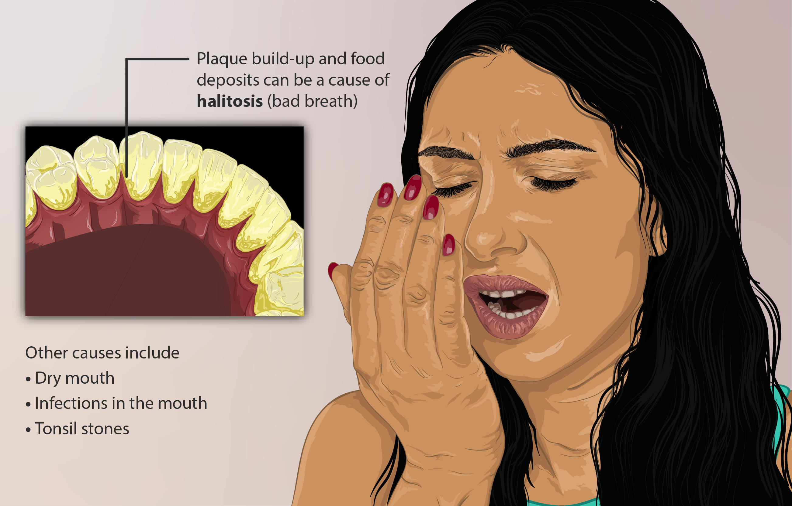

Bad breath(Halitosis)

SYMPTOMS:
- In addition to a bad smell, you may also notice a bad taste in your mouth. If the taste is due to an underlying condition and isn’t because of trapped food particles, it may not disappear — even if you brush your teeth and use mouthwash.
CAUSES:
- Poor dental hygiene
-
Strong food and beverage
-
Smoking
-
Dry Mouth
-
Peridontal disease
-
Sinus, mouth or throat condition
-
Diseases
HOME REMEDIES
- If breath odor is due to a plaque buildup, a dental cleaning may solve the problem. A deep dental cleaning may be necessary if you have periodontal disease.
-
Treating underlying medical problems, such as a sinus infection or kidney disease, can also help improve breath odor.
PREVENTION
- Clean your dentures, mouth guards, and retainers daily.
-
Replace your old toothbrush with a new one every 3 months.
-
Schedule a dental cleaning and examination every 6 months.